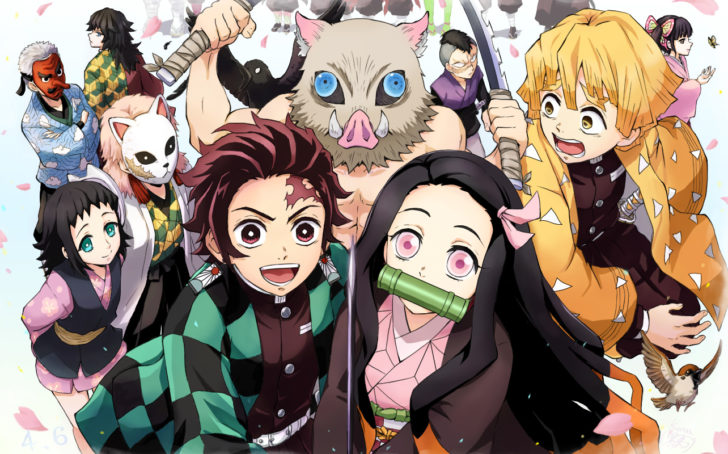
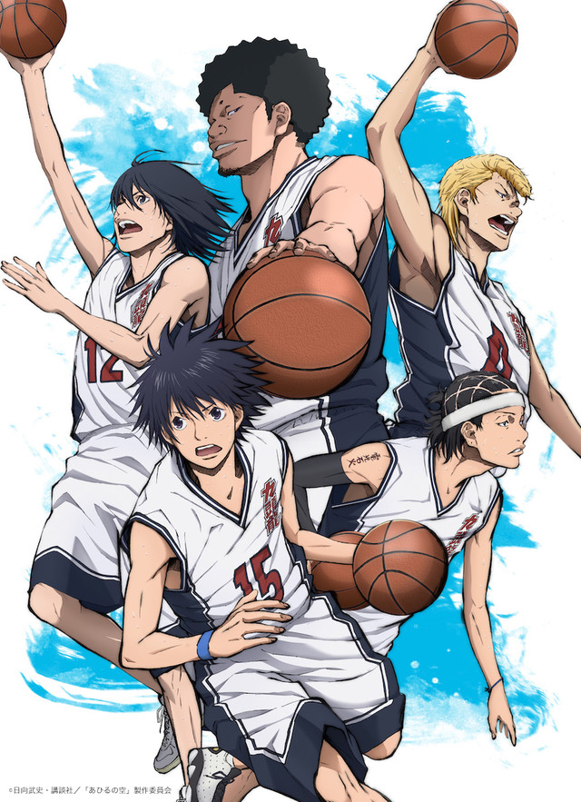

鬼滅の刃とは主人公竈門炭治朗が家族を殺した「鬼」と呼ばれる敵や鬼と化した妹を人間に戻す方法を探すためあらゆる鬼と戦う漫画である。今、十二鬼月と呼ばれるとても強い鬼と交戦中で今後の炭治朗の活躍また、仲間である伊之助、善逸の活躍に期待したい。

九頭龍（くずりゅう）高校に入学した身長149cmの車谷空は、母親に誓った「高校最初のバスケの大会で優勝」の実現のためにバスケットボール部に入ろうとする。しかしバスケ部は花園百春・千秋兄弟を始めとする不良達の巣窟になっており、部活動などできる状況ではなかった。そこから空のバスケへの熱に感化されて百春、千秋たちがバスケを始め、そこからIHを目指すという漫画である。